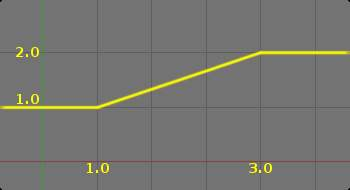
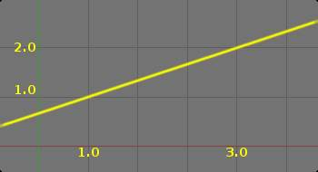

变换ation Constraint¶
This constraint is more complex and versatile than the other “transform” constraints. It allows you to map one type of transform properties (i.e. location, rotation or scale) of the target, to the same or another type of transform properties of the owner, within a given range of values (which might be different for each target and owner property). You can also switch between axes, and use the range values not as limits, but rather as “markers” to define a mapping between input (target) and output (owner) values.
So, e.g. you can use the position of the target along the X axis to control the rotation of the owner around the Z-Axis, stating that 1 BU along the target X-Axis corresponds to10 BU around the owner Z-Axis. Typical uses for this include gears (see note below), and rotation based on location setups.
Options¶
{kind=link}
变换ation panel.
- Target
This constraint uses one target, and is not functional (red state) when it has none.
- Bone
If Target is an Armature, a new field is displayed offering the optional choice to set an individual bone as Target.
- Head/Tail
- If a Bone is set as Target, a new field is displayed offering the optional choice of where along this bone the target point lies.
- Vertex Group
- If Target is a Mesh, a new field is displayed offering the optional choice to set a Vertex Group as target.
- Extrapolate
By default, the min and max values bound the input and output values; all values outside these ranges are clipped to them. When you enable this button, the min and max values are no longer strict limits, but rather “markers” defining a proportional (linear) mapping between input and corresponding output values. Let us illustrate that with two graphs Fig. The Extrapolate principles.. In these pictures, the input range (in abscissa) is set to (1.0 to 4.0), and its corresponding output range (in ordinate), to (1.0 to 2.0). The yellow curve represents the mapping between input and output.
The Extrapolate principles.¶ Extrapolate disabled: the output values are bounded inside the (1.0 to 2.0) range.
Extrapolate enabled: the output values are “free” to proportionally follow the input ones.
{kind=link}
{kind=link}
Warning
Note that:
When mapping transform properties to location (i.e. Loc, Destination button is enabled), the owner’s existing location is added to the result of evaluating this constraint (exactly like when the Offset button of the Copy Location constraint is enabled...).
Conversely, when mapping transform properties to rotation or scale, the owner’s existing rotation or scale is overridden by the result of evaluating this constraint.
When using the rotation transform properties of the target as input, whatever the real values are, the constraint will always “take them back” into the (-180 to 180) range (e.g. if the target has a rotation of 420 degrees around its X-Axis, the values used as X input by the constraint will be
((420 + 180) modulo 360) - 180 = 60 - ...)
This is why this constraint is not really suited for gears!
Similarly, when using the scale transform properties of the target as input, whatever the real values are, the constraint will always take their absolute values (i.e. invert negative ones).
When a min value is higher than its corresponding max one, both are considered equal to the max one. This implies you cannot create “reversed” mappings...
- Source
- It contains the input (from target) settings. The three Loc, Rot and Scale toggle buttons, mutually exclusive, allow you to select which type of property to use. The X, Y and Z min and max numeric fields control the lower and upper bounds of the input value range, independently for each axis. Note that if a min value is higher than its corresponding max value, the constraint behaves as if it had the same value as the max one.
- Destination
It contains the output (to owner) settings.
- The three Loc, Rot and Scale toggle buttons, mutually exclusive, allow you to select which type of property to control.
- The three Axis Mapping drop-down lists allow you to select which input axis to map to, respectively (from top to bottom), the X, Y and Z output (owner) axes.
- The min and max numeric fields control the lower and upper bounds of the output value range, independently for each mapped axis. Note that if a min value is higher than its corresponding max value, the constraint behaves as if it had the same value as the max one.
- Space
- This constraint allows you to choose in which space to evaluate its owner’s and target’s transform properties.